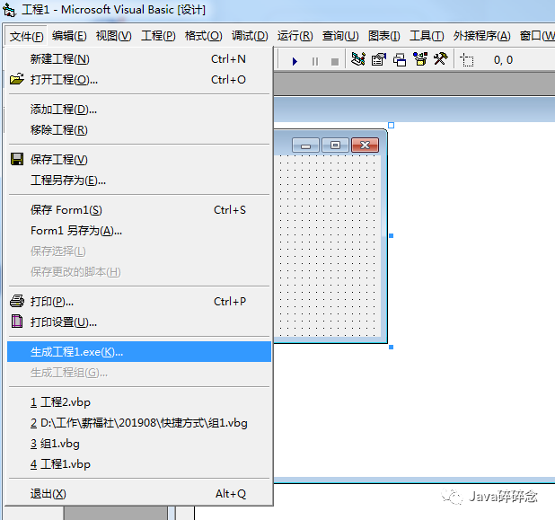

原文连接:https://www.cnblogs.com/haha12/p/11417712.html
由于用户访问我们某个网址的路径比较长，最后我们确定了在桌面添加快捷入口的方案，让用户点击快捷入口直接进入直接的网址，而且这个快捷入口要带有指定的logo（排除了新建url快捷方式的方案），所以我决定写一个exe可执行程序，让windows用户点击时候直接进入下面，下面详细介绍下实现过程。
本文目录
一、选择什么编程语言二、利用vb制作exe1.下载vb安装包2.新建一个标准的exe工程3.编写5行代码4.更换icon5.生成exe6.查看效果
一、选择什么编程语言
一开始打算采用java语言，编写java代码生成可以执行jar包，然后把可执行jar转换成exe，因为需要调用默认浏览器打开指定页面，还是采用跟windows一家的vb。
二、利用vb制作exe
1.下载vb安装包
网上下载一个vb精简版的安装包,下载地址：（http://www.onlinedown.net/soft/19976.htm）。
2.新建一个标准的exe工程
软件启动后，点击“新建工程”，选择“标准EXE”，打开了久未了界面，就是下图，有没有一种穿越的感觉，哈哈。
3.编写5行代码
点击“视图”里面切换到“代码窗口”，复制下面代码即可。
Private Declare Function ShellExecute Lib "shell32.dll" Alias "ShellExecuteA" (ByVal hwnd As Long, ByVal lpOperation As String, ByVal lpFile As String, ByVal lpParameters As String, ByVal lpDirectory As String, ByVal nShowCmd As Long) As Long
Private Sub Form_Load()
Me.Visible = False
ShellExecute 0, "open", "http://www.baidu.com", 0, 0, 1
End Sub
4.更换icon
form属性里可以设置icon，截图如下：
5.生成exe
准备生成exe
桌面上生成的文件
6.查看效果
双击“工程1.exe”后，浏览器马上打开了代码里指定好的页面，运行效果图如下：
到此可执行exe已经制作完成了，有问题欢迎留言沟通哦！
推荐阅读
1.Spring Boot 2.X 整合Redis
2.Spring Boot 2.X 如何优雅的解决跨域问题？
3.Spring Boot 2.X 集成spring session实现session共享
4.Spring条件注解@Conditional
5.SpringBoot 2.X从0到1实现邮件发送功能
6.Redis批量删除key的小技巧，你知道吗？
7.Spring Boot 2.X 如何快速整合jpa？
8.Spring Boot之Profile--快速搞定多环境使用与切换
9.Spring Boot快速集成kaptcha生成验证码
10.Spring Boot 2.X整合Spring-cache，让你的网站速度飞起来
限时领取免费Java相关资料，涵盖了Java、Redis、MongoDB、MySQL、Zookeeper、Spring Cloud、Dubbo/Kafka、Hadoop、Hbase、Flink等高并发分布式、大数据、机器学习等技术。
关注下方公众号即可免费领取：
 Java碎碎念公众号
Java碎碎念公众号